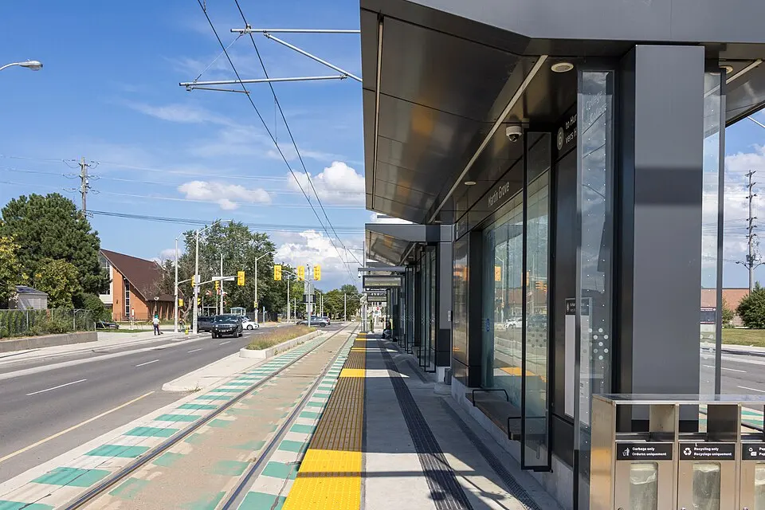

Signal
SignalStation atlas / Martin Grove
Station history
Martin Grove


Station history
Crews finished pouring the platform concrete before the canopies arrived. By the July progress report the shelters were in place.
Finch West trains began calling at a shared centre platform at Martin Grove Road.